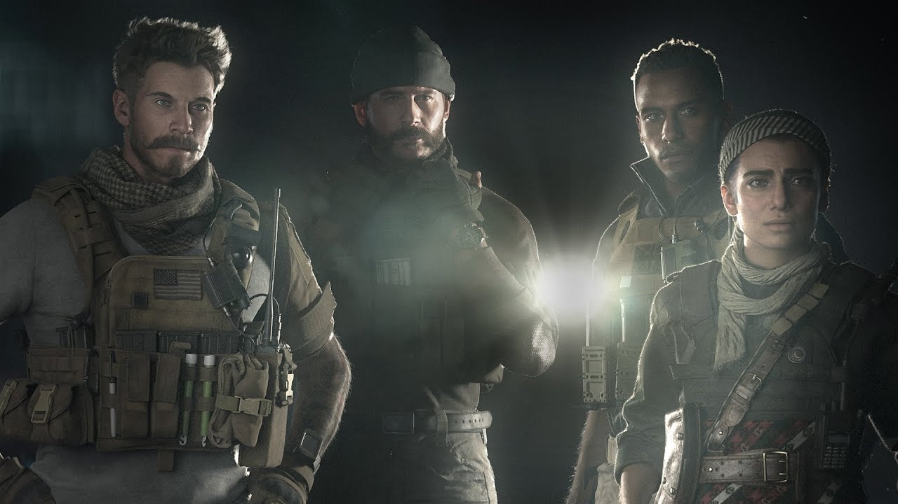

Call of Duty: Modern Warfare is een first-person shooter game, ontwikkeld door Infinity Ward.
Het spel is deel van de Modern Warfare reeks, wat deel is van de Call of Duty series.
Net als elke andere Call of Duty game bevat Modern Warfare 3 hoofd-gamemodes: Campaign, spec-ops en multiplayer.
De naam van het spel zegt het al: het spel en de Campaign spelen zich af in de moderne tijd, dus alle wapens die je in het spel tegenkomt bestaan, en worden ook gebruikt in bijvoorbeeld het leger.
In deze website praten we vooral over de multiplayer en alles wat daar omheen zit, maar hieronder staat ook wat informatie over de Campaign.

In de Campaign speel als meerdere caracters in een storyline die bestaat uit verschillende missies.
In de eerste missie speel je als Alex met als missie om een lading gifgas van de Russen te onderscheppen in een Russische basis.
Als dat mislukt en het gas in handen van terroristen valt, begin de storyline.
In de 2e missie speel je als sergeant Kyle Garrick in Londens' Piccadilly waar een terroristische aanval plaatsvind, en je ertegen moet vechten.
Vanaf dit punt switch je steeds tussen de twee karakters en probeer je te terroristen in het midden oosten tegen te houden als Alex en voer je samen met de bekende Captian Price missies uit om zowel de Russen als de Terroristen te stopen, en op een gegeven moment komen alle karakters samen in één van de laatste missies.
Deze game is de nieuwste van de Modern Warfare reeks, waarbij de eerste: Cod4 Modern Warfare uit kwam in 2007.
Deze game staat ook bekend als de beste Call of Duty game ooit gemaakt door zijn goede multiplayer en geweldige campaign met veel gedenkwaardige missies zoals Crew Expandable, Charlie Don't Surf, War Room en natuurlijk All Ghillied Up, die bekend staat als de beste cod missie ooit.
In 2009 kwam Modern Warfare 2 uit wat een vervolg was op Cod4 en in mijn opinie beter was qua campaign.
In plaats van een paar gedenkwaardige missies was heet deze campaign gedenkwaardig met geweldige missies een een geweldige soundtrack die elke cod speler zich kan herinneren, gecomposeert door Hans Zimmer.
De 3e Modern Warfare game was in verbetering qua de multiplayer en de spec ops alleen blonk minder uit qua campaign dan de eerdere games.
Deze Modern Warfare is dus de laatste met zijn release date van 25 oktober in 2019, en op dit moment verwachten ze dat de volgende cod game in 2022 Modern Warfare 2 word, als vervolg op de 2019 versie.
Hieronder staat de trailer van Modern Warfare 2019, het spel is vandaag de dag nog steeds geweldig, en dat zal het altijd blijven.